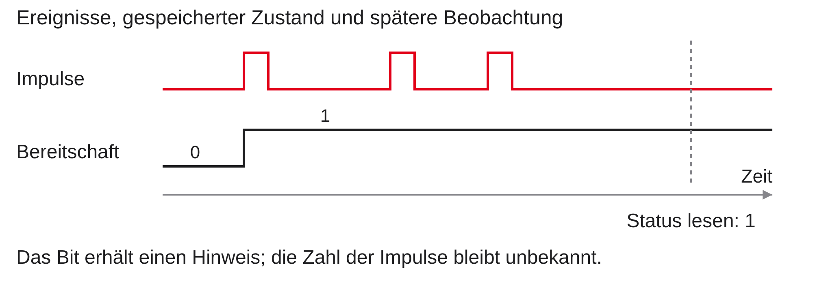
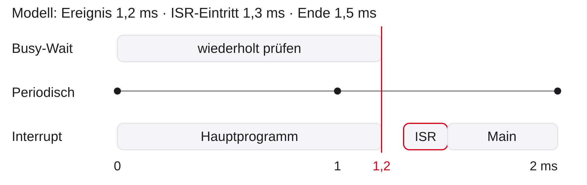
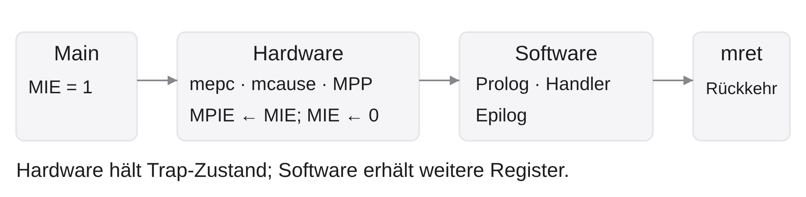
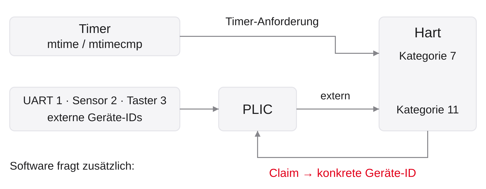
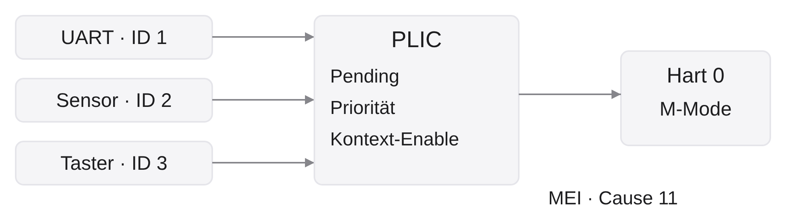
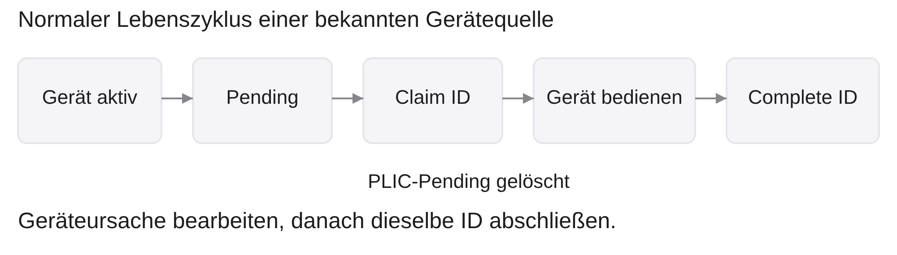
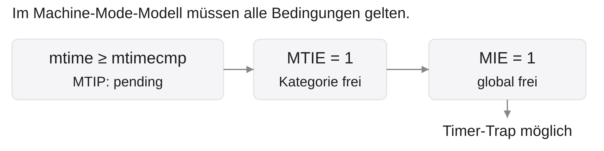
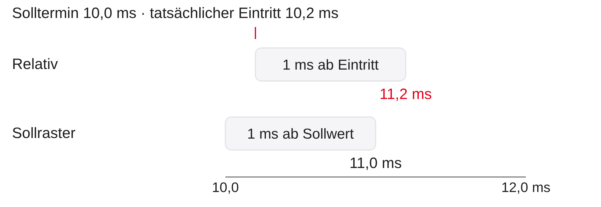
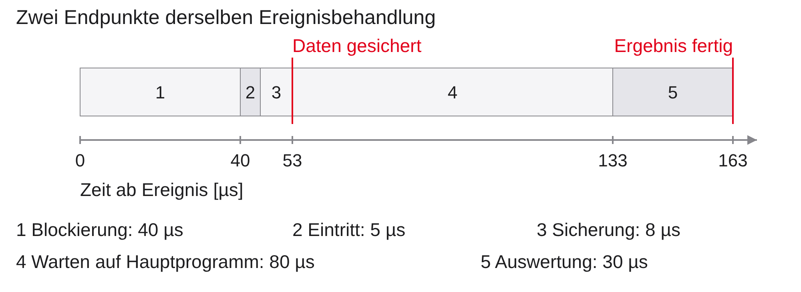
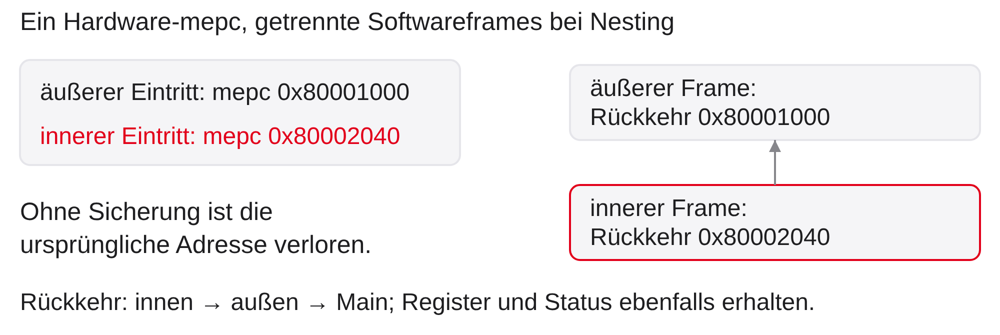

03 · Interrupts & Timer
Mikrocomputertechnik 3 · Zeit und Ereignisse im RISC-V-System
Reicht ein schnellerer Prozessor?
Ein Messgerät rechnet gerade \(4\) ms lang. Neue Sensordaten sollen innerhalb von \(100\,\mu\)s aus dem Gerät gesichert werden.
- Würde ein doppelt so schneller Prozessor das Problem lösen?
- Woher weiß das Programm, dass Daten vorliegen?
- Was muss die Hardware bis zur Bearbeitung festhalten?
Zwei Minuten zu zweit: Vorschlag und fehlende Annahme nennen.
Was sollen Sie entscheiden können?
- Ereignisbehandlung begründet auswählen
- Trap- und Gerätepfad vollständig erklären
- Timertermine trotz Verspätung planen
- Reaktionszeit und Datenübergabe prüfen
| Lernphase | Zweck |
|---|---|
| Vorlesung | Zusammenhänge begründen |
| Übung | Neue Fälle auf Papier lösen |
| Quiz | Fehlvorstellungen erkennen |
Vorkenntnisse und Lehrmodell
Was Sie mitbringen
Geräteadressen, Speicherzugriffe und Cache-Kopien (VL 1–2)
C-Zeiger, Bitoperationen, einfache Schleifen
STM32-Timer mit Prescaler, ARR und CNT aus dem Labor
Vereinfachungen dieser Vorlesung (neu)
RV32: RISC-V mit \(32\)-Bit-Registern
Ein Hart: genau ein Befehlsstrom, vereinfacht ein Prozessorkern
Machine Mode: höchste Privilegstufe mit vollem Zugriff auf Prozessor und Geräte
Keine Verschachtelung: Eine laufende Interruptbehandlung wird nicht von weiteren Interrupts unterbrochen
Geräteadressen und Timerfrequenzen sind plattformabhängig.
Vier Schulstunden: Ablauf
| Stunde | Gemeinsame Erarbeitung | Arbeitsphase |
|---|---|---|
| 1 | Ereignisse und Trap-Eintritt: \(30\) min | Aufgabe 1: \(15\) min |
| 2 | Ursachenauswahl und Gerätepfad: \(30\) min | Aufgaben 2–3: \(15\) min |
| 3 | Zeitquelle und Sollraster: \(30\) min | Aufgabe 4: \(15\) min |
| 4 | Reaktionszeit und Datenübergabe: \(20\) min | Aufgaben 5–6: \(10\) min; Quiz: \(15\) min |
Die vier Vertiefungsfolien nach dem Abschluss gehören zur Selbstlektüre.
Drei Schritte bis zur Reaktion

- Erfassen: Das Ereignis muss einen Zustand hinterlassen
- Benachrichtigen: Software muss davon erfahren
- Bearbeiten: Daten sichern und Ursache behandeln
Polling: selbst nachfragen
- Polling: Gerätezustand per Software prüfen
- Busy Waiting: wiederholt prüfen und dabei warten
- Periodisches Polling: zwischen Abfragen andere Arbeit
- Kurze ungespeicherte Ereignisse können zwischen Abfragen verschwinden
Reaktionswege auf einer Zeitachse

- Periodische Abfrage: Modellwartezeit \(0{,}8\) ms
- Interrupt: eigene Eintrittslatenz und Behandlungszeit
Wie oft muss Polling nachfragen?
Lehrmodell: gespeicherter Status, alle \(250\,\mu\)s prüfen. Eine Abfrage kostet \(3\,\mu\)s Prozessorzeit.
\[ W_{\max}=250\,\mu\mathrm{s},\qquad U=\frac{3}{250}=1{,}2\,\% \]
- \(100\,\mu\)s Erkennungsfrist sind damit nicht garantiert
- Kürzeres Intervall: weniger Wartezeit, mehr Abfrageaufwand
- Die größte tatsächliche Abfragelücke zählt
Gespeichert heißt nicht gezählt
Vor einer Behandlung treten drei Ereignisse ein.
| Hardwarezustand | Was kann Software daraus erkennen? |
|---|---|
| Ungespeicherter kurzer Impuls | später möglicherweise nichts |
| Ein Bereitschaftsbit | mindestens ein Ereignis |
| Ereigniszähler ohne Überlauf | Anzahl der Ereignisse |
| Ausreichend großer Datenpuffer | gespeicherte einzelne Daten |
Welche Information braucht das Messgerät aus dem Einstieg?
Welche Strategie passt zum Ereignis?
| Situation | Zu prüfende Bedingung |
|---|---|
| Bereitschaft bleibt sichtbar | zulässige Abfrageperiode |
| Kurzer Impuls | Erfassung oder Speicherung |
| Sehr viele Ereignisse | Behandlungsaufwand und Puffer |
| Feste Reaktionsfrist | gesamte Verzögerung |
Interrupt, Exception und Trap
- Interrupt: asynchrone Anforderung, etwa vom Timer
- Exception: synchron zum ausgeführten Befehl, etwa ein ungültiger Befehl
- Trap: gemeinsamer Übergang in die Behandlung
- Gleicher Einsprungmechanismus bedeutet nicht gleiche Ursache
Pending ist nicht Freigabe
Im betrachteten Machine Mode:
\[ \text{Interruptnahme}:\quad \text{Pending}\land\text{Quellenfreigabe}\land\mathrm{MIE} \]
mip: Machine Interrupt Pendingmie: Machine Interrupt Enable, Kategorienfreigabenmstatus.MIE: globale Freigabe der betrachteten M-Interrupts
CSR: Control and Status Register, Steuer- und Statusregister. mip, mie und mstatus sind CSRs im Prozessor; MIE ist ein Bit in mstatus.
Welche Anforderung wird angenommen?
Ein Timer hat eine wartende Anforderung. Im Machine-Mode-Modell:
| Timerfreigabe MTIE | Globale Freigabe MIE | Timer-Trap möglich? |
|---|---|---|
| \(0\) | \(0\) | ? |
| \(0\) | \(1\) | ? |
| \(1\) | \(0\) | ? |
| \(1\) | \(1\) | ? |
Was passiert beim Sperren mit Zeitquelle und Ursache?
Kontext und spezielle Register
| Zustand | Bedeutung |
|---|---|
| Allgemeine Register | laufende Werte und Adressen |
mepc |
gespeicherte Fortsetzungsadresse |
mcause |
Trap-Ursache |
mstatus |
Status und Interruptfreigaben |
mip |
wartende Interruptanforderungen |
mie |
Freigaben der Interrupt-Kategorien |
Trap-Eintritt: Hardware und Software

- Hardwarezustand und Software-Sicherung ergänzen sich
mretersetzt keine Wiederherstellung allgemeiner Register
mcause auf RV32 lesen
\[ I=(\text{raw}\gg31)\mathbin{\&}1,\qquad c=\text{raw}\mathbin{\&}\texttt{0x7FFFFFFF} \]
| Rohwert | Interpretation |
|---|---|
0x80000007 |
Interrupt, Kategorie \(7\) |
0x8000000B |
Interrupt, Kategorie \(11\) |
0x00000002 |
Exception, Code \(2\) |
Kategorie ist nicht Geräte-ID

mcause: Welche Art von Trap liegt vor?- PLIC-Claim: Welches externe Gerät wurde übernommen?
Direct / Vectored: erster Einsprung
mtvec: BASE in den oberen Bits, MODE in Bits \(1{:}0\). MODE \(0\): Direct, MODE \(1\): Vectored.
| Modus | Eintrittsadresse |
|---|---|
| Direct | BASE für alle Traps |
| Vectored, Interrupt | \(\mathrm{BASE}+4c\) |
| Vectored, Exception | BASE |
\(c\): Code ohne Interrupt-Bit. Slotabstand: \(4\) Byte.
BASE 0x80000100: Timer (\(c=7\)) → 0x8000011C.
- Am Slot steht ein Befehl, etwa
j timer_entry, kein geladener Zeiger - Externe Geräte teilen Kategorie \(11\); PLIC-Claim bleibt nötig
Partnerfrage: Code \(11\) als Interrupt? Als Exception (ecall im Machine Mode)?
Den Trap-Pfad in eigenen Worten erklären
RV32: mcause = 0x8000000B, später liefert Claim die ID \(2\).
- Welche Information liefert jeweils der erste und der zweite Wert?
- Was hat die Hardware beim Eintritt bereits gesichert?
- Was muss Software vor der Fortsetzung erledigen?
Verwenden Sie die Begriffe Ursache, Kontext und Gerätebearbeitung.
Der PLIC verbindet Geräte mit einem Kontext

- Quellen haben Geräte-IDs und Prioritäten
- Ein Kontext gehört zu Hart und Privilegstufe
- Globale Ursache im Lehrmodell: Machine External, Code \(11\)
Welche externe Quelle kommt zuerst?
Alle Quellen warten und sind freigegeben. Der Schwellenwert ist \(0\).
| Geräte-ID | Quelle | Priorität |
|---|---|---|
| \(1\) | UART | \(3\) |
| \(2\) | Sensor | \(7\) |
| \(3\) | Taster | \(7\) |
- Höhere Priorität zuerst, bei Gleichstand kleinere ID
- Priorität \(0\) wäre unwirksam
- Bestimmen Sie die Reihenfolge ohne neue Ereignisse
Claim ist ein Zugriff mit Seiteneffekt
- Liefert die höchstpriorisierte claimbare Geräte-ID
- Löscht atomar das zugehörige PLIC-Pending
- ID \(0\): keine claimbare Quelle; kein Handler und kein Complete
- Die Ursache im Gerät ist dadurch noch nicht bearbeitet
Claim, Gerät bearbeiten, Complete

Claim und Complete betreffen den Controller; Gerätequittierung ist ein eigener Schritt.
Level-Ursache bleibt aktiv
- Ein Gerät hält seine Anforderungsleitung aktiv
- Claim entfernt das PLIC-Pending
- Software meldet Complete, ohne die Geräteursache zu beseitigen
- Das Gateway kann erneut Pending melden
Priorität erhöhen behebt die Geräteursache nicht.
Normaler externer Behandlungspfad
Pseudocode für bekannte, konfigurierte Quellen:
Hohe Priorität unterbricht nicht automatisch
Während einer ISR ist die globale Freigabe MIE im Grundmodell \(0\).
- Eine weitere Anforderung kann trotzdem entstehen und warten
- PLIC-Priorität ordnet wartende externe Quellen
- Sie unterbricht die laufende ISR nicht von selbst
- Lange ISR verlängern deshalb mögliche Wartezeiten
Unser Hauptmodell bleibt kurz und nicht verschachtelt.
mtime ist die Zeitquelle
- Machine Time: \(64\)-Bit-Zähler, auch auf RV32
- Frequenz der Zeitquelle von der Plattform bestimmen
- Kein notwendiger Gleichlauf mit dem Prozessortakt
- Zeit seit Start: Differenz zum gespeicherten Startwert
Timer-Ticks sind keine Prozessorzyklen
Lehrannahmen: Timer \(f_T=10\) MHz, Prozessor \(f_C=100\) MHz.
\[ \Delta=f_T\cdot1\,\mathrm{ms}=10000\ \text{Timer-Ticks} \]
| Größe für \(1\) ms | Anzahl |
|---|---|
| Timer-Ticks | \(10000\) |
| Prozessorzyklen | \(100000\) |
Eine Änderung des Prozessortakts ändert die vorgegebene Timerfrequenz nicht.
Vergleich und Freigaben des Timers

- STM32-Update: ARR erzeugt das Periodenraster in Hardware
- Hier:
mtimezählt weiter,mtimecmpsetzt einen einzelnen Termin
Rückkehr ist keine Timerquittierung
Bei Eintritt gilt mtime \(\geq\) mtimecmp.
mretstellt den Trap-Rückkehrzustand her- Es setzt den Vergleichswert nicht automatisch weiter
- Der nächste Termin muss strikt in der Zukunft liegen
Was passiert bei Rückkehr mit unverändertem Vergleich und wirksamen Freigaben?
Erst vorbereiten, zuletzt freigeben
- Gültigen Stack und Trap-Eintritt sicherstellen
- Globale Interruptfreigabe zunächst gesperrt halten
- Zeit lesen, ersten Zukunftstermin nach
mtimecmpschreiben - Timerkategorie freigeben:
mie.MTIE - Globale Freigabe setzen:
mstatus.MIE
Vom ARR-Raster zum Softwaretermin
STM32-Update: Hardware-Raster durch Prescaler und ARR.

Brücke zum STM32-Compare: CNT läuft frei, ARR ist maximal.
CCR1 += periodbzw. \(d+\Delta\): SollrasterCCR1 = CNT + periodbzw. \(\mathrm{now}+\Delta\): relativ
Ein Flag zählt keine Perioden
STM32: \(6\) Update-Ereignisse können in UIF = 1 zusammenfallen.
RISC-V-Beispiel: \(\Delta=1\) ms, nächster Solltermin \(d=10\) ms, aktuelle Zeit \(n=15{,}3\) ms.
\[ k=\left\lfloor\frac{n-d}{\Delta}\right\rfloor+1=6,\qquad d'=d+k\Delta=16\ \mathrm{ms} \]
Ein Handler-Aufruf bedeutet hier sechs fällige Solltermine.
Nachzählen braucht eine erhaltene Zeitbasis, nicht nur ein Flag.
Sechs Termine – sechsmal messen?
Im Beispiel aus Folie 33 sind die Termine \(10\) bis \(15\) ms fällig. Der Handler läuft erst bei \(15{,}3\) ms.
| Ziel der Anwendung | Mögliche Reaktion |
|---|---|
| Verstrichene Zeit bestimmen | Zeitdifferenz aus dem Hardwarezähler |
| Eine aktuelle Anzeige erneuern | einmal mit aktuellem Zustand auswerten |
| Jeden historischen Messwert erhalten | zuvor gespeicherte Daten benötigen |
| Regelmäßig Messwerte erfassen | Hardware-Trigger und ausreichenden Puffer prüfen |
Ein Sollraster ersetzt keine gespeicherten Messwerte.
Nächsten Vergleichstermin planen
C-Lehrmodell: monotone Zeit, positive Periode, kein Umlauf oder Überlauf.
Ergebnis nach mtimecmp; beim STM32-CCR zusätzlich den Zählerumlauf behandeln.
Kurze Behandlung, spätere Nutzarbeit
- ISR: erforderliche zeitkritische Schritte
- Hauptprogramm: längere Verarbeitung
- Eine Markierung allein ist nicht schon die fertige Reaktion
Kurze ISR: Aufwand berechnen
Lehrwerte: Prozessor \(100\) MHz, \(1000\) Behandlungen pro Sekunde, \(500\) Prozessorzyklen je vollständiger ISR.
\[ t_\text{ISR}=\frac{500}{100\cdot10^6}=5\,\mu\mathrm{s} \]
\[ U=1000\,\mathrm{s}^{-1}\cdot5\,\mu\mathrm{s}=0{,}5\,\% \]
Beweist dieser kleine Zeitanteil eine Reaktion binnen \(100\,\mu\)s?
Wann ist die Reaktion fertig?

- Daten gesichert: \(40+5+8=53\,\mu\)s
- Ergebnis fertig: \(53+80+30=163\,\mu\)s
Eine \(100\,\mu\)s-Frist erfüllt nur der erste Endpunkt.
Was bleibt in der ISR?
| Sofort nötiger Schritt | Häufig aufschiebbare Arbeit |
|---|---|
| Daten vor Überschreiben sichern | längere Filterrechnung |
| Geräteursache passend quittieren | Text formatieren |
| Nächsten Timervergleich setzen | Bedienoberfläche aktualisieren |
| Übernommene Quelle abschließen | gespeicherte Daten weiter auswerten |
Die Aufteilung folgt Frist, Gerätevertrag und Speicherbedarf.
Gemeinsam genutzter Zustand
- ISR und Hauptprogramm greifen zeitlich verschränkt zu
- Snapshot: veröffentlichter Beobachtungsstand
- Ein Bit kann Ereignisse zusammenfassen
- Mehrschrittige Änderungen benötigen ein Konsistenzverfahren
volatile verhindert keinen verlorenen Hinweis
| Schritt | Hauptprogramm | ISR |
|---|---|---|
| \(1\) | liest Flag \(1\) | |
| \(2\) | setzt erneut Flag \(1\) | |
| \(3\) | schreibt Flag \(0\) |
Die zweite Markierung ist danach nicht mehr sichtbar.
Übernahme und Löschen zusammen schützen
Pseudocode: ein Hart, ein Arbeitsflag, keine verschachtelte ISR.
Die geschützte Folge bleibt kurz; die Nutzarbeit liegt außerhalb.
Flag, Zähler oder Datenpuffer?
| Benötigte Aussage | Geeignete Grundidee |
|---|---|
| Aktuellen Zustand erneut auswerten | Flag, Ereignisse dürfen zusammenfallen |
| Wie viele Ereignisse sind eingetroffen? | konsistent übernommener Zähler |
| Welche einzelnen Messwerte kamen an? | ausreichend großer Datenpuffer |
Auch Zähler und Puffer brauchen Überlauf- und Übergaberegeln.
Zurück zum Messgerät
Neue Daten binnen \(100\,\mu\)s sichern, Auswertung dauert \(4\) ms.
- Rechengeschwindigkeit allein begrenzt die Abfragelücke nicht passend
- Hardware muss Daten und Bereitschaft bis zur Übernahme erhalten
- Kurze ISR kann sichern und quittieren; Auswertung folgt später
- Frist und Übergabe brauchen eigene Begründungen
Was ändert dauerhafter Messbetrieb?
Abschlussquiz: Welche Annahme fehlt?
- Zehn Fragen, zehn Minuten beantworten, fünf Minuten auswerten
- Prüfen Sie Ereignisspeicherung, Freigaben und vollständige Behandlung
- Unterscheiden Sie Zeitquelle, Solltermin und Handler-Aufruf
- Begründen Sie strittige Antworten mit Zustand oder Zeitrechnung
Die optionalen Vertiefungen werden nicht vorausgesetzt.
Was Sie jetzt begründen können
- Ein Ereignis braucht Erfassung, Benachrichtigung und Behandlung
- Freigaben und Kontext machen einen Trap-Pfad korrekt
- Claim, Geräteaktion und Complete haben verschiedene Aufgaben
- Zeitquelle und absolutes Sollraster begrenzen Planungsfehler
- Kurze ISR und konsistente Übergabe brauchen ein Reaktionsbudget
Vorlesung 4 nutzt diese Grundlage für zeitgesteuerte Ausgänge.
Vertiefung: mtime auf RV32 lesen
C-Lehrfunktion; mt[0] ist LO, mt[1] HI:
Vertiefung: mtimecmp auf RV32 schreiben
C-Lehrfunktion für Little Endian und stark geordnete Gerätezugriffe:
Ein einzelner uint64_t-Store garantiert auf RV32 keine atomare Aktualisierung.
Vertiefung: Verschachtelte Interrupts

Ein mepc ist kein Stapel von Rückkehradressen.
Vor Wiederfreigabe: Kontext sichern, Quellen und Stackbedarf begrenzen.
Vertiefung: Was der PLIC-Threshold filtert
Für die Benachrichtigung eines Kontexts:
\[ \mathrm{pending}\land\mathrm{enabled}\land (\mathrm{priority}>\mathrm{threshold}) \]
- Priorität \(0\): Quelle unwirksam
- Bei gleicher aktiver Priorität gewinnt die kleinere Geräte-ID
- Expliziter Claim und Benachrichtigung sind getrennte Vorgänge